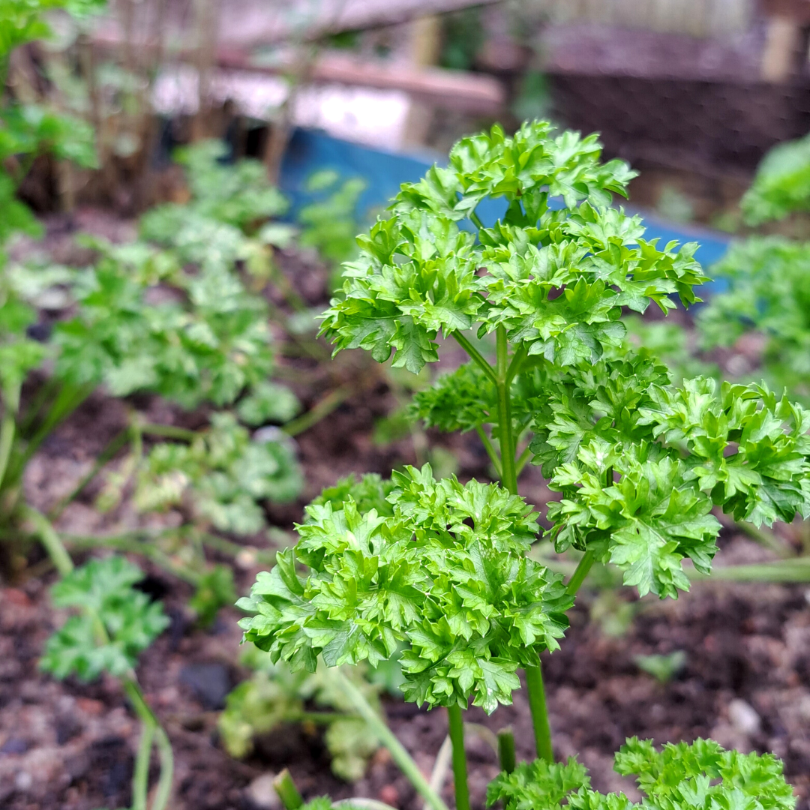
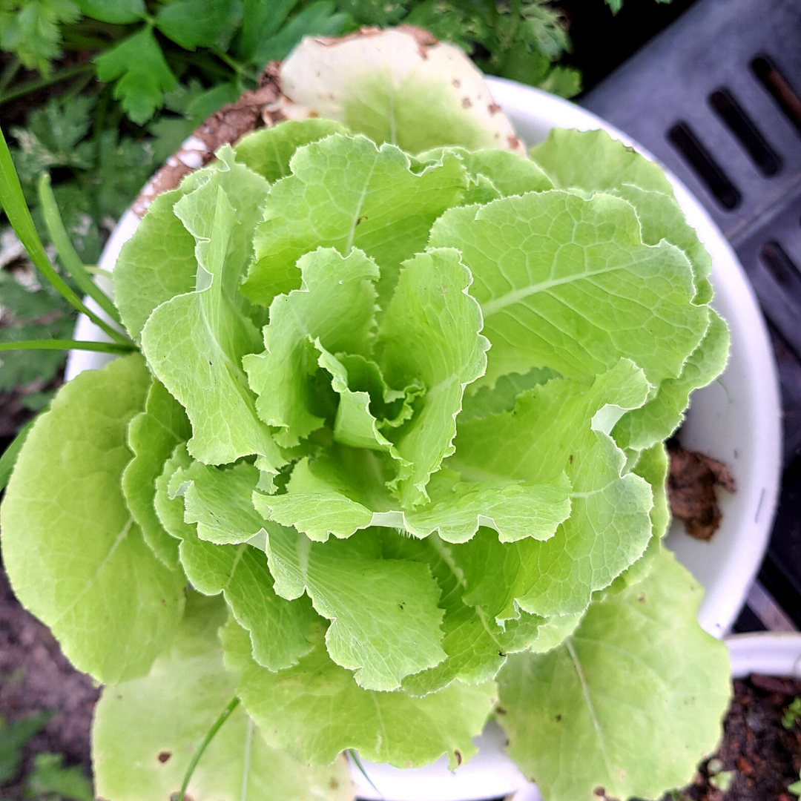
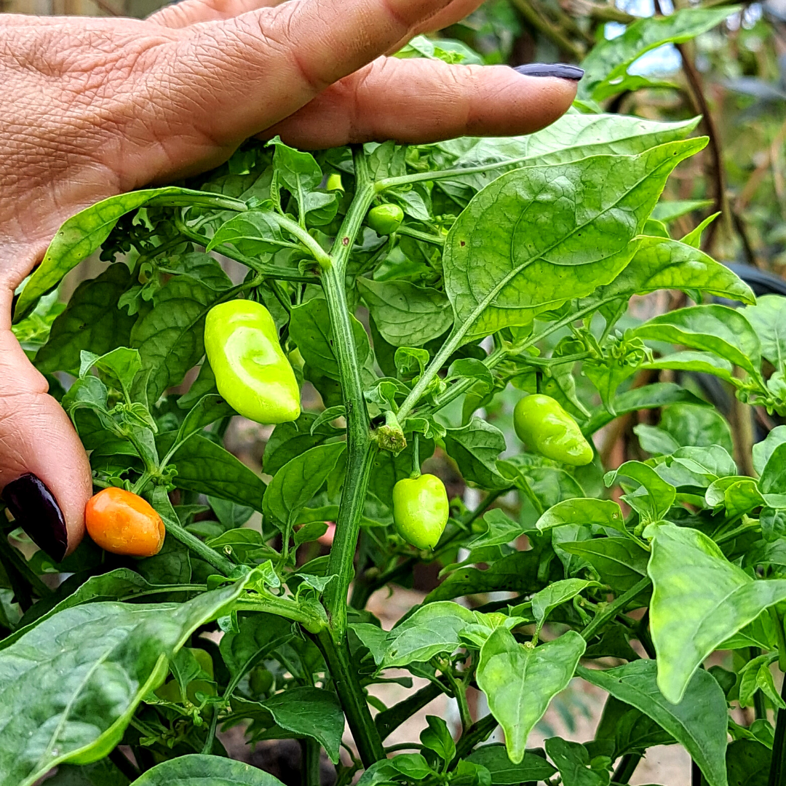
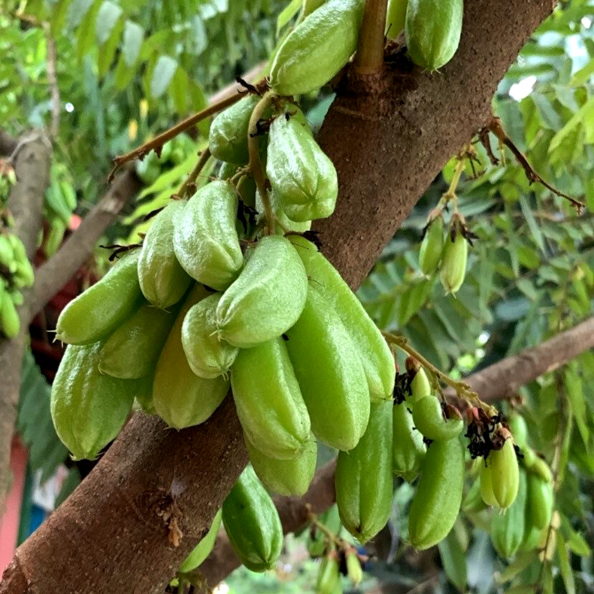
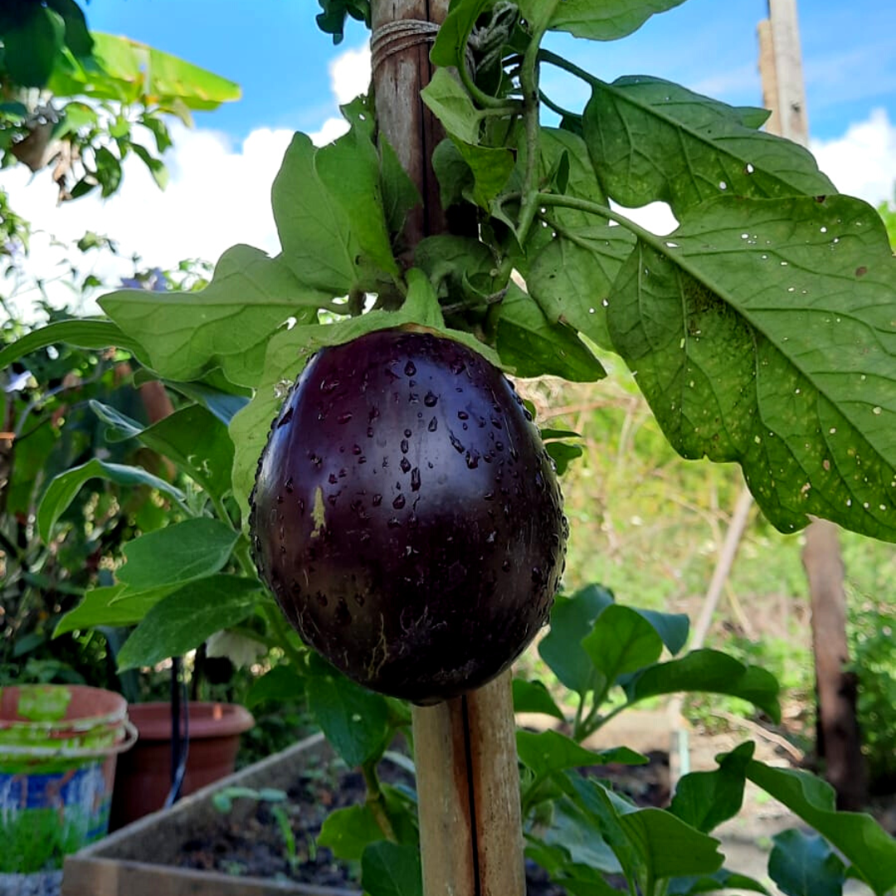
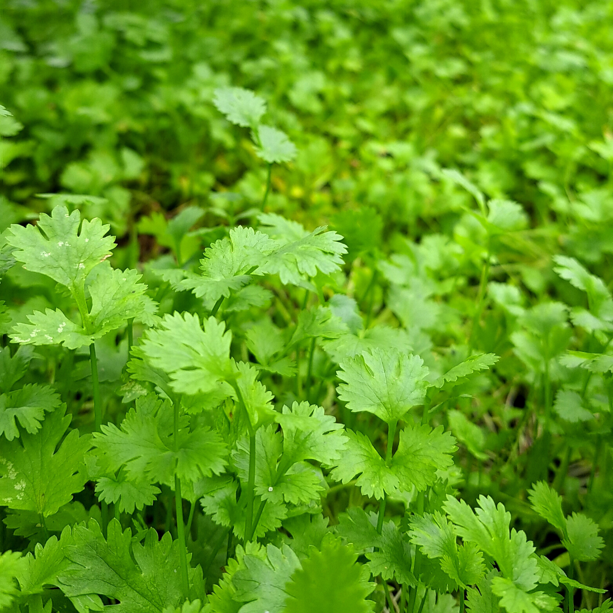
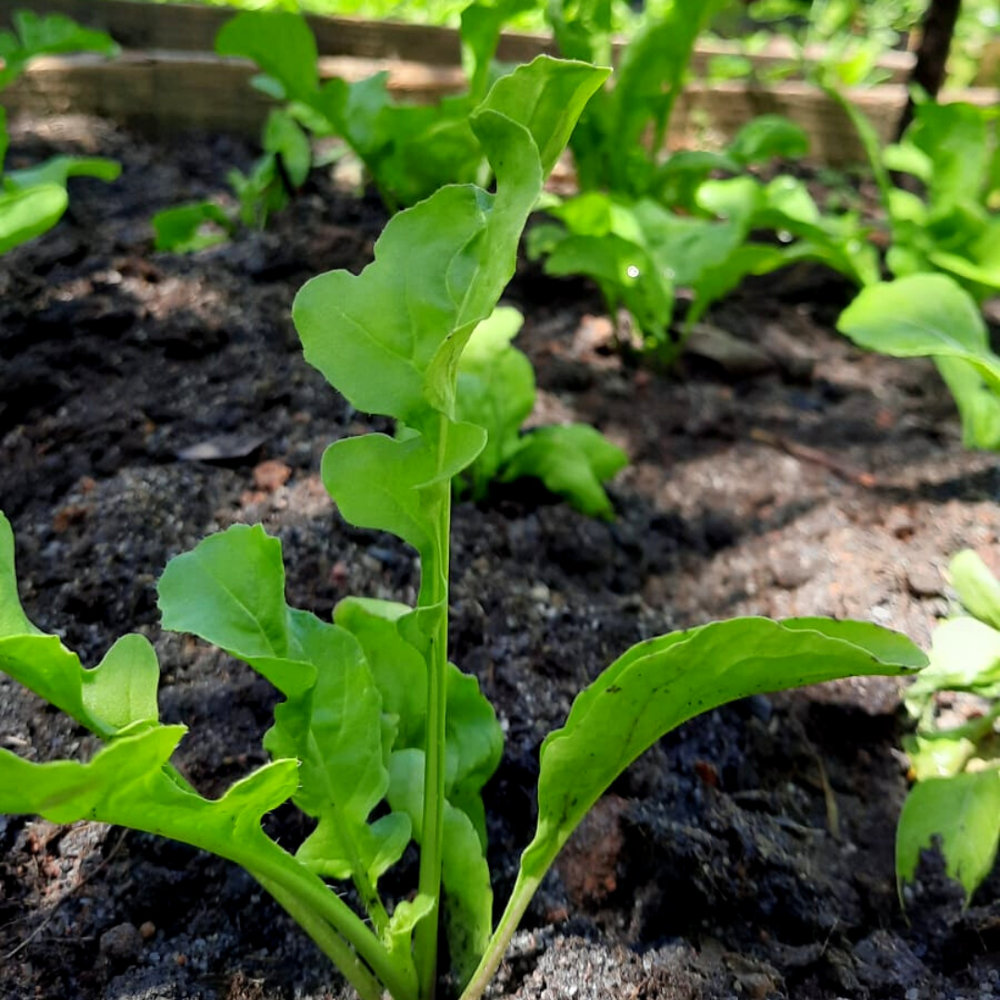
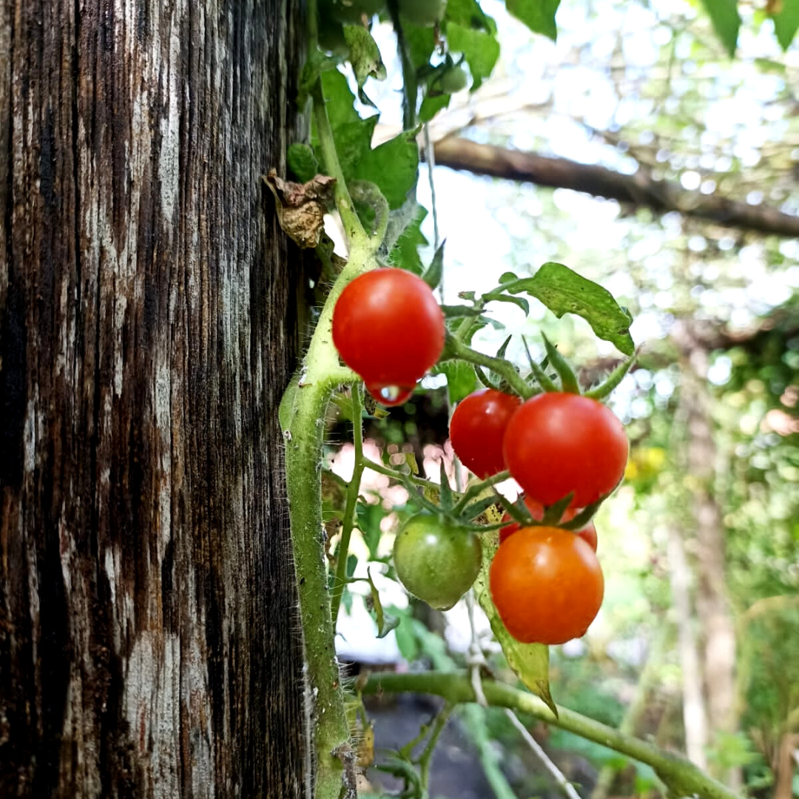
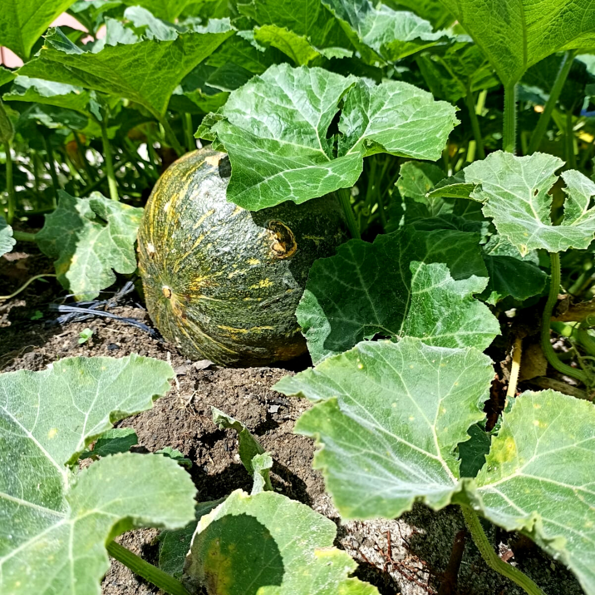

SALSA CRESPA
Presente no: Embelezamento do prato.
Usada principalmente para dar beleza aos pratos e participa dos temperos.
Presente no: Embelezamento do prato.
Usada principalmente para dar beleza aos pratos e participa dos temperos.

ALFACE
Presente na: Salada do dia, Salada Especial Biribiri e Salada Mar e Mar.
Cada folha foi cuidadosamente plantada e colhida pela Chef. Simone, garantindo que você esteja recebendo o melhor sabor.
Presente na: Salada do dia, Salada Especial Biribiri e Salada Mar e Mar.
Cada folha foi cuidadosamente plantada e colhida pela Chef. Simone, garantindo que você esteja recebendo o melhor sabor.

PIMENTA DE CHEIRO
Presente na: Pimenta da casa e no tempero.
Usada principalmente para dar cheir na comida, a pimenta ainda faz parte da pimenta na sua mesa.
Presente na: Pimenta da casa e no tempero.
Usada principalmente para dar cheir na comida, a pimenta ainda faz parte da pimenta na sua mesa.

BIRIBIRI
Presente na: Pimenta, Moqueca e Drinks.
Sendo multifuncional, o Biribiri participa das pimentas, vai na sua moqueca e ainda pode fazer drink.
Presente na: Pimenta, Moqueca e Drinks.
Sendo multifuncional, o Biribiri participa das pimentas, vai na sua moqueca e ainda pode fazer drink.

BERINJELA
Presente na: Pasta de Berinjela
Faz parte da nossa entrada vegetariana e esta sendo um sucesso por aqui com torradas ao lado.
Presente na: Pasta de Berinjela
Faz parte da nossa entrada vegetariana e esta sendo um sucesso por aqui com torradas ao lado.

COENTRO
Presente no: Tempero do seu prato.
Aquele tempero que jamais falta na cozinha da Bahia: o Coentro. Se faz presente no tempero da maioria dos pratos por aqui.
Presente no: Tempero do seu prato.
Aquele tempero que jamais falta na cozinha da Bahia: o Coentro. Se faz presente no tempero da maioria dos pratos por aqui.

RÚCULA
Presente na: Salada fresca do Peixe com Ervas.
Nosso peixe com crosta de ervas acompanha uma salada fresca com a folha, tomate, manga e um molho da casa.
Presente na: Salada fresca do Peixe com Ervas.
Nosso peixe com crosta de ervas acompanha uma salada fresca com a folha, tomate, manga e um molho da casa.

TOMATINHOS
Presente na: Salada do dia e no embelezamento do prato
Separado com muito cuidado, os tomates cerejas ajudam a embelezar ainda mais os pratos servidps.
Presente na: Salada do dia e no embelezamento do prato
Separado com muito cuidado, os tomates cerejas ajudam a embelezar ainda mais os pratos servidps.

ABÓBORA
Presente no: Camarão na Moranga.
A gente sabe, não é uma moanga, mas para mostrar nossa horta nós usamos a cabotian, que fica sensacional .
Presente no: Camarão na Moranga.
A gente sabe, não é uma moanga, mas para mostrar nossa horta nós usamos a cabotian, que fica sensacional .